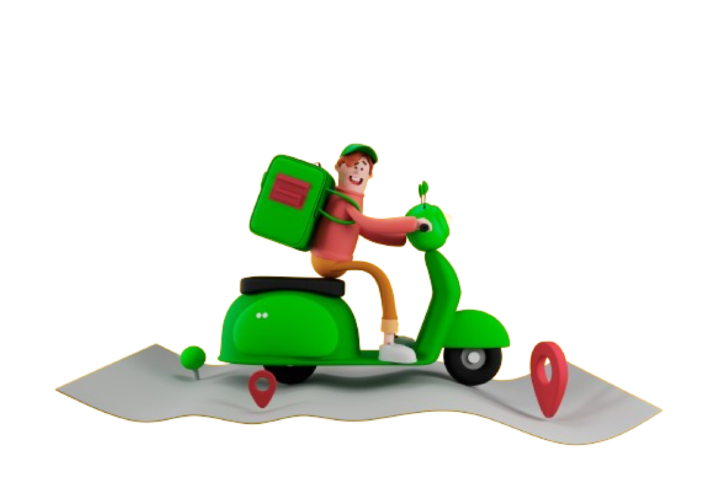
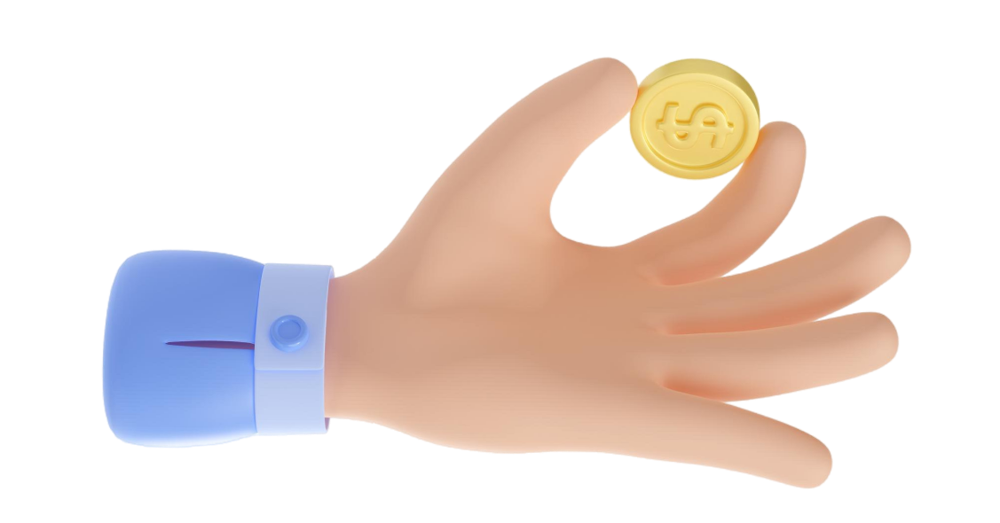

Kami menyediakan layanan pengambilan sampah di rumah. Pengguna tinggal mencantumkan alamat rumah dan kami akan siap untuk menjemput sampah anda, tetapi pastikan sampah sudah dipisah sesuai kategori.
Setelah menjemput sampah anda, kami akan mulai mendaur ulang sampah. Tentunya sampah anda akan kita ubah menjadi barang yang bisa digunakan kembali. Beberapa barang hasil pendauran ulang dapat berupa dekorasi rumah, pot tanaman, pakaian, dan lain sebagainya.
Dengan mengirimkan sampah, anda berkesempatan untuk mendapatkan poin. Poin-poin yang anda kumpulkan bisa ditukarkan menjadi voucher yang bisa digunakan di berbagai toko. Poin juga bisa ditukar dengan barang hasil daur ulang.
